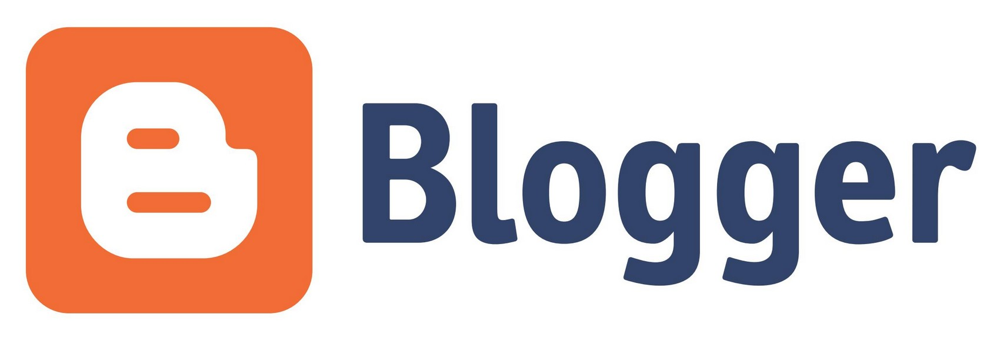
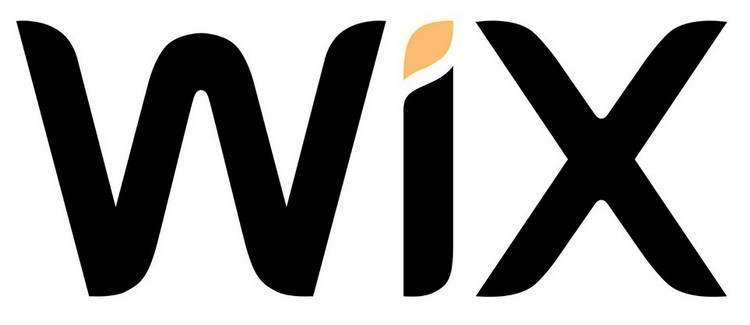
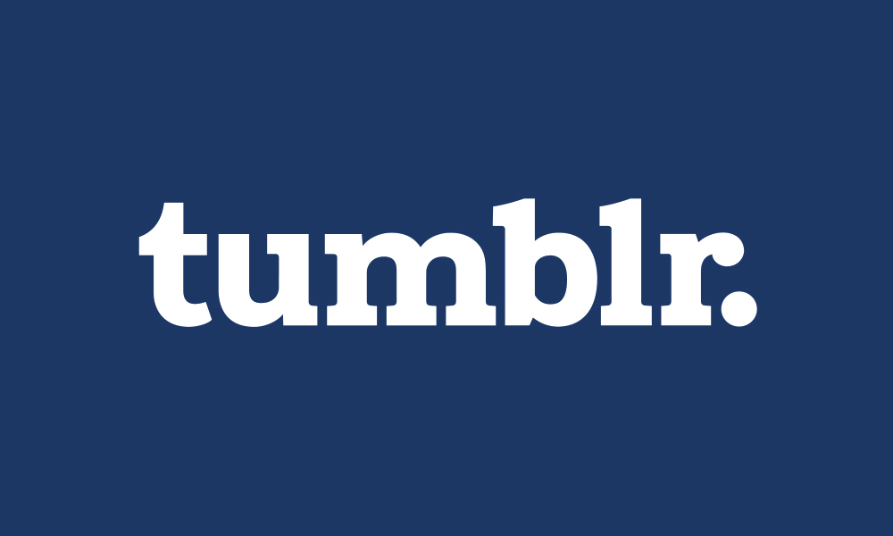
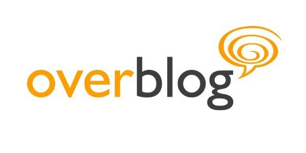
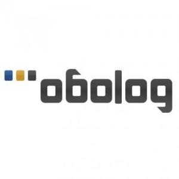

WordPress
WordPress la plataforma más utilizada y conocida para crear blogs y cuenta con una versión en la que no tienes que pagar nada por el hosting (WordPress.com). WordPress se considera el mejor gestor de contenidos para el posicionamiento en buscadores. Destaca por su facilidad de gestión y está pensado también para dispositivos móviles.
La versión gratuita alberga 3GB de espacio de almacenamiento. Del mismo modo, ofrece una amplia variedad de temas y plugins, aunque hay un catálogo de pago también (Premium). Por otro lado, la plataforma te permite crear tu propio blog e incluso personalizarlo mucho más si lo instalas en tu servidor y utilizas un dominio propio (la versión de pago WordPress.org).
Blogger
La plataforma de creación de Google te permite crear blogs sin necesidad de tener hosting propio. Además puedes utilizar dominio propio (o no) al igual que en WordPress. Tanto WordPress como Blogger tienen la posibilidad de tenerlo todo gratis o pagar por dominio, aunque blogger no permite la opción de utilizar hosting propio ya que los blogs se alojan en servidores de Google.
Blogger es un servicio gratuito en la nube que no tiene tantas funcionalidades ni es tan completo como WordPress, pero es muy utilizado incluso por negocios que cuentan con un bajo presupuesto. También existe la posibilidad de ganar dinero con esta plataforma, ya que puedes introducir publicidad en tu página mostrando anuncios de AdSense y de otros servicios.
Wix
Es otra solución para crear un blog gratis de una forma totalmente intuitiva y personalizada que se basa en el sistema “en la nube”. Nada más entrar puedes elegir qué tipo de web o blog quieres crear que se adapte a tu medida.
Wix apuesta por un hosting seguro, sencillas herramientas para gestionar el SEO, más de 500 plantillas y un amplio banco de imágenes profesionales de alta resolución. Permite integrar el código HTML para agregar encuestas, formularios u otras opciones.
Medium

Plataforma para crear blogs iniciada por el cofundador de Twitter, Evan Williams, en la que puedes hacer tu propio blog teniendo en cuenta que lo único importante en este caso es el contenido y que las opciones de personalización en esta plataforma son limitadas. Hace un tiempo os explicamos todos los detalles sobre cómo sacarle partido en tu estrategia online.
Medium es un plataforma muy social. Fue fundada en 2012 y ha evolucionado hasta convertirse en una especie de comunidad donde publican escritores, bloggers, periodistas y expertos. Por ello, es una buena opción si quieres llegar a un mayor número de personas con intereses similares a los tuyos.
Tumblr
Tumblr es una plataforma de microblogging en que puedes escribir, poner enlaces, vídeos, citas, imágenes y mucho más. Es sencillo e intuitivo, aunque por supuesto no es tan completo como algunas de las opciones anteriores.
Es algo similar a Twitter pero con mayores posibilidades para hacer un blog. Al igual que en el caso de Medium, en esta plataforma resulta mucho más fácil encontrar o conectar con contenidos o perfiles que vayan en armonía con nuestros intereses.
Overblog
Un sitio donde podrás crear tu propio blog gratis con algunas opciones básicas de personalización. Tiene un directorio de blogs, comunidad, top blogs y más cosas. Antes de su migración a lo que ahora es Overblog, la empresa pagaba a redactores por crear contenidos.
La oferta gratuita incorpora entradas y almacenamiento ilimitados. Si no te importa pagar un poco (2,29 euros al mes) puedes eliminar la publicidad de tu blog o restringir el acceso a tu espacio mediante una contraseña.
Obolog
Obolog es otro sitio donde puedes crear un blog responsive con integración con redes sociales, diversas funciones y posibilidad de dominio propio sin coste adicional. Incluye hasta 6 blogs con cada cuenta de usuario y tiene 100MB de espacio para tus álbumes de fotos.
Esta plataforma española tiene el editor visual WYSIWYG (mismo que WordPress) y ofrece estadísticas de acceso y lectura de mensajes. No cuenta con gestión de plugins, aunque es rápida, funcional y … es gratis.